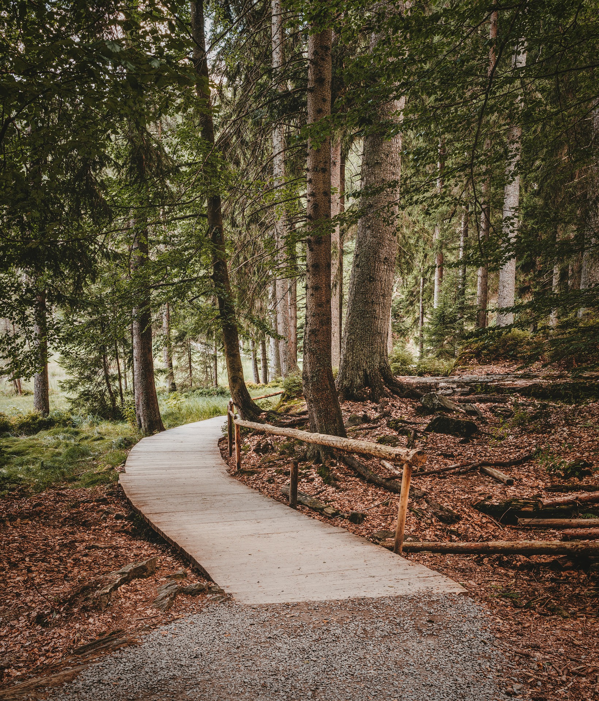

NUESTRA MISIÓN
Buscamos conscientizar sobre la importancia de cuidar nuestro planeta, e inspirar a nuestros lectores a hacer pequeños cambios en su día a día para disfrutar juntos de un futuro más verde, para nosotros y nuestras familias.
⠀¿Alguna vez te has detenido a pensar en la importancia de la Tierra y por qué debemos cuidarla?
⠀Cuidar el medio ambiente significa proteger a todos los seres vivos que comparten nuestro hogar en la Tierra. Desde los animales más pequeños hasta los árboles gigantes, todos dependemos unos de otros para vivir felices y saludables. Al mantener limpios nuestros bosques, océanos y ríos, garantizamos que todos los seres vivos tengan un lugar seguro para vivir.
⠀Al cuidar nuestro planeta, tambíen estamos asegurandonos de tener suficientes recursos para vivir. El aire limpio que respiramos, el agua fresca que bebemos y la comida que comemos provienen todos de la Tierra. Si cuidamos estos recursos y no los malgastamos, podemos asegurarnos de que siempre estén disponibles para todos.
⠀También es importante tener en cuenta del cambio climático. Este fenómeno hace que el clima sea más extremo y puede causar problemas graves como inundaciones, sequías y tormentas fuertes. Pero si todos hacemos pequeños cambios en nuestra vida diaria, como usar menos energía, reciclar más y elegir conscientemente productos eco-amigables podemos ayudar a frenar el cambio climático y proteger nuestro planeta.


